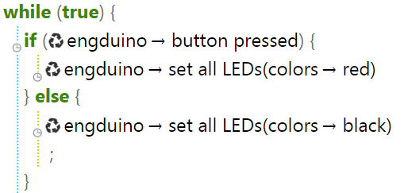
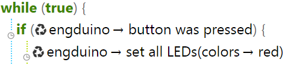

Engduino Button
And now let's learn about how to use the button that's on the back of your engduino, you can basically implement the button to any of your project, so let's get started:
Functions
- Button Pressed
- Button was Pressed
Button Pressed
This function tells the user if the button is currently pressed. It returns a Boolean value. It returns true if the button is pressed, false if it is not pressed. For example the program below has an if statement. It will execute if the button is pressed and the LEDs colour will turn to red. If the button is released the if statement condition will become false so the LEDs will turn off by setting the colour to black.
Button Was Pressed
This function tells the user if the button was pressed. It returns a Boolean value. For example in the program below if the button is pressed then the LEDs will turn to red and won't turn off like the button pressed function.
Exercises:
- Make the Engduino to change the colour when the button is pressed twice
- Make the Engduino to set a colour if the button is pressed